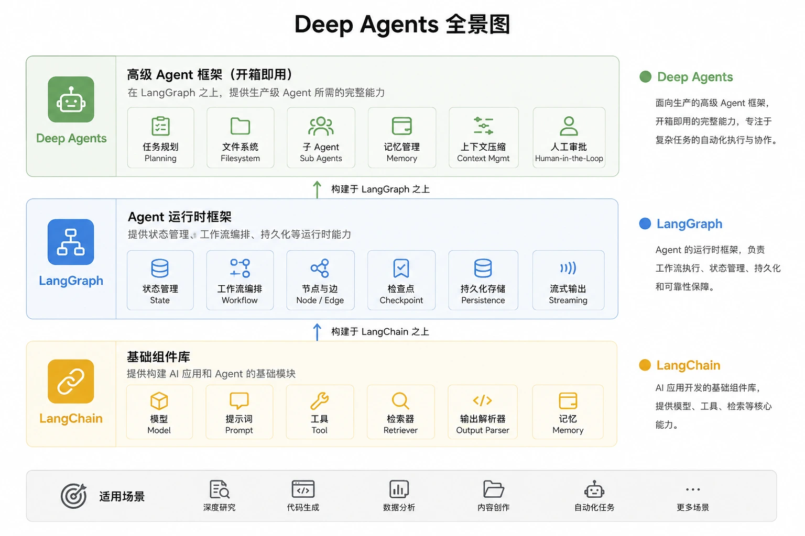

Deep Agents Getting Started Tutorial
Deep Agents is a batteries-included agent development framework officially launched by LangChain, designed specifically for complex tasks, long-running processes, multi-step planning, and multi-agent collaboration scenarios.
Compared to traditional Agents that require developers to manually assemble components such as Prompt, Tool, Memory, and Workflow, Deep Agents has already built in core capabilities such as task planning, filesystem, sub-Agent orchestration, context compression, and memory management, allowing developers to focus more on business logic rather than underlying architecture setup.
This tutorial is designed for developers with zero prior experience. It guides you from installation and configuration through the core working mechanisms of Deep Agents step by step, and uses the DeepSeek API to build a real, runnable AI Agent project.
What are Deep Agents?
Deep Agents can be understood as an advanced Agent framework (Agent Harness) built for production environments.
It is officially defined as: an Agent runtime framework with complete infrastructure, not just a simple LLM + Tool calling loop.
After installation, you can directly obtain the following capabilities without additional development:
- Automatic task planning (Planning)
- Filesystem read/write (Filesystem)
- Sub Agent collaboration (Sub Agents)
- Context compression and management (Context Management)
- Long-running task execution (Long Running Tasks)
- Human approval (Human-in-the-Loop)
- Persistent memory (Memory)
- Streaming output (Streaming)
Deep Agents' design goals
Traditional Agents typically use the ReAct pattern: user input → LLM reasoning → call tool → LLM reasoning → call tool → output result.
When the task scale is small, this pattern works well. But as task complexity increases (for example, automatically generating market research reports, analyzing financial statements of multiple companies, or writing a complete project codebase), the following problems gradually emerge:
- The context window quickly expands and exceeds model limits
- ] Overly long reasoning chains cause performance degradation
- The Agent easily forgets work completed earlier
- Lack of isolation between multiple tasks, causing mutual interference
- Tool calling logic becomes increasingly complex and hard to maintain
The core goal of Deep Agents is to solve these engineering problems in complex task scenarios.
Relationship with LangChain and LangGraph
] Many beginners easily confuse the positioning of these three projects; they actually sit at different abstraction levels.
| Framework | Level positioning | Core responsibilities | Applicable scenarios |
|---|---|---|---|
| LangChain | 基础组件层 | Provides AI basic components such as Model, Prompt, Tool, Retriever, and Output Parser | Foundational capability for building individual Agents or AI applications |
| LangGraph | 运行时层 | Provides state management, workflow orchestration, nodes and edges, and Checkpoint persistence capabilities | For complex scenarios that require custom graph structures and execution flows |
| Deep Agents | 应用框架层 | Encapsulates production-grade capabilities on top of LangGraph, such as planning, file system, sub-Agents, memory, and context compression | Quickly build complex multi-step Agents without designing the architecture from scratch |

The three are not mutually exclusive but can be used together: LangChain provides building blocks, LangGraph is the engineering framework that organizes the blocks, and Deep Agents is an out-of-the-box high-level application layer on top. Any LangGraph
CompiledStateGraphcan be passed into Deep Agents as a subagent, and the three layers can be flexibly mixed.
Core Competencies Overview
Deep Agents comes with the following middleware built in, ready to use with no extra configuration:
| Capability | Description | Core Components |
|---|---|---|
| Task Planning | Use built-inwrite_todostools to break complex tasks into ordered steps | TodoListMiddleware |
| Virtual File System | Read and write files, offload large tool outputs to disk, saving context window | FilesystemMiddleware |
| Sub-Agent | Delegate subtasks to dedicated sub-Agents with independent context windows | SubAgentMiddleware |
| Context Compression | Automatically summarize historical messages to avoid exceeding the model context limit | SummarizationMiddleware |
| Human-in-the-loop | Pause before critical tool calls to wait for human approval | HumanInTheLoopMiddleware |
| Long-term Memory | Cross-session persistent memory based on LangGraph Store | MemoryMiddleware |
| Skills | Load reusable domain knowledge and instruction sets on demand | SkillsMiddleware |
Install
Deep Agents is published on PyPI with the package namedeepagents。
Recommended to useuvinstallation, which is faster; you can also use the traditionalpip。
Install with uv (recommended)
uv init uv add deepagents tavily-python uv sync
Install using pip.
pip install deepagents tavily-python
Install with DeepSeek API
DeepSeek is compatible with the OpenAI interface, so you also need to installlangchain-openai。
pip install deepagents langchain-openai
The only requirement Deep Agents has for the model is that the model supportstool calling. DeepSeek V3 and DeepSeek R1 series both support it, so you can use it with confidence.
Configuration Instructions
create_deep_agentIt is the core function for creating an Agent, supporting the following parameter configuration.
| Parameters | Type | Required | Description | Default Value |
|---|---|---|---|---|
model | str or model instance | 否 | Model string, in the formatprovider:model-name, or directly pass an initialized model object | anthropic:claude-sonnet-4-6 |
tools | list | 否 | List of custom tool functions or LangChain Tool objects | None |
system_prompt | str or SystemMessage | 否 | Custom system prompt, used to define the Agent's role and behavior | None |
backend | BackendProtocol | 否 | Virtual file system backend, determines file storage location | StateBackend |
subagents | list | 否 | List of sub-Agent definitions, used for task delegation | None |
memory | list | 否 | List of AGENTS.md file paths loaded at startup | None |
skills | list | 否 | List of Skills directory paths loaded on demand | None |
permissions | list | 否 | Access permission control rules at the file system path level | None |
interrupt_on | dict | 否 | Specifies which tool calls require manual approval, must be used with checkpointer | None |
checkpointer | Checkpointer | 否 | State persistence checkpointer, must be set for multi-turn conversations or HITL | None |
store | BaseStore | 否 | Cross-session long-term storage backend | None |
response_format | ResponseFormat | 否 | Schema definition for structured output | None |
middleware | list | 否 | Custom middleware appended to the end of the default middleware stack | () |
debug | bool | 否 | Enable debug mode, output detailed logs | False |
File system backend comparison
Deep Agents provides multiple backends to control how the Agent reads and writes files.
| Backend | Storage Location | Cross-session Persistence | Applicable Scenario |
|---|---|---|---|
| StateBackend | Within LangGraph graph state | No (valid within the same thread) | Default, for local development and simple scenarios |
| FilesystemBackend | Local disk | 是 | Requires real read/write of local files, use with caution |
| StoreBackend | LangGraph Store | 是 | Multi-turn conversation persistence, cross-Thread sharing |
| LocalShellBackend | Local disk + Shell | 是 | Requires executing Shell commands, only in trusted environments |
| CompositeBackend | Routes to multiple backends | Depends on the child backend | Fine-grained control of storage policies for different directories |
For beginners, simply use the defaultStateBackendis sufficient.FilesystemBackend 和 LocalShellBackendWill let the Agent directly operate on your local file system; strictly configure permissions before use.
Quick Start
This section demonstrates how to create a runnable Deep Agent with minimal code.
Configure DeepSeek API Key
DeepSeek is compatible with OpenAI's API format, and both the API Key and Base URL need to be set.
export OPENAI_API_KEY="sk-your-deepseek-api-key" export OPENAI_BASE_URL="https://api.deepseek.com" export TAVILY_API_KEY="your-tavily-api-key"
DeepSeek's API Key can beplatform.deepseek.comapplied for. Set the environment variable
OPENAI_BASE_URLto point to DeepSeek's address, and LangChain will automatically forward requests there.TAVILY_API_KEY needs to be applied for on the Tavily official websitehttps://www.tavily.com/ to generate a key in the tvly-xxxxxxxx format.
Simplest example: Hello World Agent
Create an Agent with a custom tool and send the first message to DeepSeek.
example
import os
from deepagents import create_deep_agent
from langchain_openai import ChatOpenAI
# Use ChatOpenAI and set base_url to DeepSeek; this is the most direct way to connect
model = ChatOpenAI(
model="deepseek-v4-flash", # Required: model name
api_key=os.environ["OPENAI_API_KEY"], # Required: DeepSeek API Key
base_url="https://api.deepseek.com", # Required: DeepSeek's OpenAI-compatible endpoint
)
# Define a simple custom tool; the function's docstring serves as the tool description
def get_weather(city: str) -> str:
"""Query the weather for a specified city."""
# In a real project, you would call a real weather API here
return f"{city} is sunny today, 25°C, suitable for going out."
# Create an Agent, passing in the model instance and tool list
agent = create_deep_agent(
model=model,
tools=[get_weather],
system_prompt="You are a friendly assistant who can query weather information.",
)
# Call the Agent; messages accepts OpenAI-style message format
result = agent.invoke({
"messages": [{"role": "user", "content": "What's the weather like in Beijing today?"}]
})
# Print the Agent's final reply
print(result["messages"][-1].content)
# 运行脚本 python hello_agent.pyOutput:
Beijing is **sunny** today, with a temperature of **25°C**, very suitable for going out. ☀️
Note: The Agent returns a full list of messages (
messages), and the final reply is at the end of the list, i.e.,result["messages"][-1].content。
Detailed usage
This section uses several real-world scenarios to gradually demonstrate the core capabilities of Deep Agents.
Use DeepSeek R1 for reasoning tasks.
DeepSeek R1 is a reasoning-enhanced model, suitable for tasks requiring complex analysis.
Example
import os
from deepagents import create_deep_agent
from langchain_openai import ChatOpenAI
# DeepSeek R1: Designed for Complex Reasoning
model = ChatOpenAI(
model="deepseek-v4-pro", # DeepSeek Thinking Model
api_key=os.environ["OPENAI_API_KEY"],
base_url="https://api.deepseek.com",
)
# Math Calculation Tool Example
def calculate(expression: str) -> str:
"""Safely evaluate a mathematical expression and return the calculation result."""
try:
# Note: A safer expression evaluation library should be used in production environments.
result = eval(expression, {"__builtins__": {}}, {})
return f"Calculation result: {expression} = {result}"
except Exception as e:
return f"Calculation error: {str(e)}"
agent = create_deep_agent(
model=model,
tools=[calculate],
system_prompt="You are a mathematical analysis expert, skilled at breaking down complex problems and solving them step by step.",
)
result = agent.invoke({
"messages": [{"role": "user", "content": "Calculate the sum of all odd numbers from 1 to 100, and verify the result."}]
})
print(result["messages"][-1].content)
Execution output:
再换一种方法做交叉验证：
- 1 到 100 所有整数之和：\( \frac{100 \times 101}{2} = 5050 \)
- 1 到 100 的偶数之和：\( 2 + 4 + \cdots + 100 = 2 \times \frac{50 \times 51}{2} = 2550 \)
- 奇数之和：\( 5050 - 2550 = 2500 \)
两种方法结果一致。
---
**结论**：1 到 100 的所有奇数之和为 **2500**。
**推导回顾**：
- 奇数序列首项 1，末项 99，项数 \( \frac{99-1}{2}+1 = 50 \)
- 等差数列求和：\( S = \frac{n(a_1 + a_n)}{2} = \frac{50 \times (1+99)}{2} = 2500 \)
Custom system prompt
Throughsystem_promptThe parameters define the Agent's role, task objectives, and behavioral norms.
Example
import os
from deepagents import create_deep_agent
from langchain_openai import ChatOpenAI
model = ChatOpenAI(
model="deepseek-v4-flash",
api_key=os.environ["OPENAI_API_KEY"],
base_url="https://api.deepseek.com",
)
# Custom system prompt: Define the Agent's identity, responsibilities, and behavioral guidelines.
code_review_instructions = """You are a senior Python engineer, focusing on code review.
Your responsibilities:
- Check code readability, performance, and security
- Point out potential bugs and improvement suggestions
- Provide specific modification examples
Response format:
1. Overall rating (1-10)
2. List of main issues
3. Specific improvement suggestions (with modified code snippets)
"""
agent = create_deep_agent(
model=model,
system_prompt=code_review_instructions,
)
# Submit a piece of code for review
code_to_review = """
def find_user(users, name):
for i in range(len(users)):
if users[i]['name'] == name:
return users[i]
return None
"""
result = agent.invoke({
"messages": [{"role": "user", "content": f"Please review the following code:\n```python{code_to_review}```"}]
})
print(result["messages"][-1].content)
Streaming output
For scenarios that require real-time progress display, you can usestreamThe method receives Agent output chunk by chunk.
Example
import os
from deepagents import create_deep_agent
from langchain_openai import ChatOpenAI
model = ChatOpenAI(
model="deepseek-v4-flash",
api_key=os.environ["OPENAI_API_KEY"],
base_url="https://api.deepseek.com",
)
agent = create_deep_agent(
model=model,
system_prompt="You are a technical writing expert, skilled at writing clear and understandable technical documentation.",
)
# The stream method returns a generator, yielding one event chunk at a time.
for chunk in agent.stream({
"messages": [{"role": "user", "content": "Write a brief introduction to Python decorators."}]
}):
# chunk is a dictionary containing incremental messages
if "messages" in chunk:
for msg in chunk["messages"]:
if hasattr(msg, "content") and msg.content:
print(msg.content, end="", flush=True)
print() # Final newline
Multi-turn dialogue (with checkpoints)
Together withMemorySavercheckpoints, you can achieve stateful dialogue across turns.
example
import os
from deepagents import create_deep_agent
from langchain_openai import ChatOpenAI
from langgraph.checkpoint.memory import MemorySaver # In-memory checkpoint, data will be lost after restart.
model = ChatOpenAI(
model="deepseek-v4-flash",
api_key=os.environ["OPENAI_API_KEY"],
base_url="https://api.deepseek.com",
)
# MemorySaver saves the conversation state in memory, which is lost after the process ends.
# It is recommended to use SqliteSaver or PostgresSaver in production
checkpointer = MemorySaver()
agent = create_deep_agent(
model=model,
system_prompt="You are a helpful programming assistant.",
checkpointer=checkpointer, # Must be passed, otherwise multi-turn conversations cannot remember context
)
# thread_id is the unique identifier of a conversation thread; the same thread_id shares the same context
config = {"configurable": {"thread_id": "runoob-session-001"}}
# First round
result1 = agent.invoke(
{"messages": [{"role": "user", "content": "My name is RUNOOB, and I am learning Python."}]},
config=config,
)
print("First round reply:", result1["messages"][-1].content)
# Second round: The Agent can remember the previous round's information
result2 = agent.invoke(
{"messages": [{"role": "user", "content": "What is my name? What am I learning?"}]},
config=config,
)
print("Second round reply:", result2["messages"][-1].content)
第一轮回复：你好，RUNOOB！很高兴认识你，Python 是一门非常适合初学者的语言... 第二轮回复：你叫 RUNOOB，你正在学习 Python！...
The role of thread_id:The same
thread_idAll calls under it share the same conversation history. Differentthread_idare isolated from each other and do not interfere. You can think of it as a "conversation room number".
Comprehensive Demo: Research Report Agent
This section demonstrates a complete research report Agent, using DeepSeek V3 as the main model, integrating custom search tools, and demonstrating the use of sub-agents.
Scene description
We will build an Agent that receives the user's research topic, automatically breaks down tasks, calls search tools to collect information, and finally outputs a structured report.
Example
# Demo: Building a research report Agent using DeepSeek API + Deep Agents
# Dependency installation: pip install deepagents langchain-openai requests
import os
import json
from tavily import TavilyClient
from typing import Literal
from deepagents import create_deep_agent
from langchain_openai import ChatOpenAI
from langgraph.checkpoint.memory import MemorySaver
# ──────────────────────────────────────────
# 1. Initialize the DeepSeek model
# ──────────────────────────────────────────
main_model = ChatOpenAI(
model="deepseek-v4-flash", # Strong comprehensive capabilities, suitable for planning and writing
api_key=os.environ["OPENAI_API_KEY"],
base_url="https://api.deepseek.com",
temperature=0.3, # Optional: Reduce randomness to make the report more rigorous
)
# Initialize the Tavily client (for search tools)
tavily_client = TavilyClient(
api_key=os.environ["TAVILY_API_KEY"]
)
# ──────────────────────────────────────────
# 2. Define the Tavily search tool
# ──────────────────────────────────────────
def web_search(
query: str,
max_results: int = 5,
) -> str:
"""Use Tavily to search internet information"""
try:
response = tavily_client.search(
query=query,
max_results=max_results,
search_depth="advanced",
include_answer=True,
include_raw_content=False,
)
lines = []
# AI summarized answer
if response.get("answer"):
lines.append(f"Summary: {response['answer']}\n")
# Search results
for idx, item in enumerate(response.get("results", []), start=1):
lines.append(
f"""
[{idx}] {item.get('title', '')}
URL: {item.get('url', '')}
Content: {item.get('content', '')}
""".strip()
)
return "\n\n".join(lines)
def format_report(title: str, sections: str) -> str:
"""Organize the research content into a Markdown format report.
Args:
title: Report title
sections: Content of each section, represented as a JSON string, format: {"Chapter Name": "Content"}
"""
try:
data = json.loads(sections)
lines = [f"# {title}\n"]
for section_name, content in data.items():
lines.append(f"## {section_name}\n")
lines.append(f"{content}\n")
return "\n".join(lines)
except Exception as e:
return f格式化出错：{str(e)}
# ──────────────────────────────────────────
# 3. 定义专用子 Agent（信息整合专家）
# 子 Agent 有独立的上下文窗口，避免主 Agent 上下文膨胀
# ──────────────────────────────────────────
report_writer_subagent = {
"name": "report-writer", # 必填：子 Agent 唯一名称
"description": "专业的报告撰写助手，负责将研究资料整合为结构清晰的报告。", # 必填：主 Agent 用此描述决定何时委派任务
"system_prompt": "你是一位专业的报告撰写专家。接收研究资料后，请整理成包含摘要、主要内容、结论三部分的报告，语言简洁清晰。",
"tools": [format_report], # 可选：子 Agent 专用工具
# 不指定 model 则继承主 Agent 的模型
}
# ──────────────────────────────────────────
# 4. 配置并创建 Deep Agent
# ──────────────────────────────────────────
checkpointer = MemorySaver()
research_instructions = """你是一位专业的研究助手，擅长深度调研和报告撰写。
当用户提供研究主题时，你应当：
1. 使用 web_search 工具搜索相关信息（至少搜索 2-3 次，涵盖不同角度）
2. 将收集到的资料整理汇总
3. 委派 report-writer 子 Agent 撰写最终报告
4. 输出完整报告给用户
注意：每次搜索使用不同的关键词，以获取更全面的信息。
"""
agent = create_deep_agent(
model=main_model,
tools=[web_search], # 主 Agent 可用的工具
system_prompt=research_instructions,
subagents=[report_writer_subagent], # 注册子 Agent
checkpointer=checkpointer,
)
# ──────────────────────────────────────────
# 5. 运行 Agent
# ──────────────────────────────────────────
print("正在研究中，请稍候...\n")
result = agent.invoke(
{
"messages": [{
"role": "user",
"content": "请帮我研究 LangGraph 是什么，以及它的主要应用场景。"
}]
},
config={"configurable": {"thread_id": "runoob-research-001"}}
)
print("=" * 60)
print("研究报告")
print("=" * 60)
print(result["messages"][-1].content)
正在研究中，请稍候... ============================================================ 研究报告 ============================================================ # LangGraph 研究报告 ## 摘要 LangGraph 是 LangChain 团队推出的一个用于构建有状态、多角色 LLM 应用的框架... ## 主要内容 ### 核心概念 LangGraph 将 Agent 的执行流程建模为一张有向图... ### 主要应用场景 1. 多步骤推理任务 2. 人机协作（Human-in-the-loop）工作流 3. 多 Agent 协作系统 ... ## 结论 LangGraph 是构建生产级 Agent 应用的重要工具...
Human-in-the-loop example
对于敏感操作（例如删除文件、发送邮件），可以配置 Agent 在执行前暂停等待人工确认。
Example
# Human-in-the-loop：让 Agent 在执行危险操作前请求人工审批
import os
from langchain.tools import tool
from deepagents import create_deep_agent
from langchain_openai import ChatOpenAI
from langgraph.checkpoint.memory import MemorySaver
from langgraph.types import Command
model = ChatOpenAI(
model="deepseek-v4-flash",
api_key=os.environ["OPENAI_API_KEY"],
base_url="https://api.deepseek.com",
)
# 使用 @tool 装饰器定义工具（需要 langchain 包）
@tool
def delete_file(path: str) -> str:
"""删除指定路径的文件。"""
# 实际项目中这里会调用 os.remove(path)
return f"文件 {path} 已删除。"
@tool
def read_file(path: str) -> str:
"""读取指定路径的文件内容。"""
return f"文件 {path} 的内容：（示例内容）"
# interrupt_on 配置哪些工具需要人工审批
# True means allow: approval, editing parameters, rejection, sending custom replies
# False means no approval required
# dict allows fine-grained control over the allowed operation types
checkpointer = MemorySaver() # HITL must be used with a checkpointer
agent = create_deep_agent(
model=model,
tools=[delete_file, read_file],
interrupt_on={
"delete_file": True, # Delete operation: requires full approval process
"read_file": False, # Read operation: no approval required
},
checkpointer=checkpointer,
)
config = {"configurable": {"thread_id": "runoob-hitl-001"}}
# First invocation: Agent pauses when executing delete_file
print("Starting Agent...")
result = agent.invoke(
{"messages": [{"role": "user", "content": "Please delete the file /tmp/test.txt."}]},
config=config,
)
# Check if there is a pending approval interrupt
for msg in result.get("messages", []):
print(fAgent message: {msg.content if hasattr(msg, 'content') else msg})
# Resume execution: pass in the approval decision
# "approve" means approve the execution of the tool
# "reject" means reject; the Agent will not execute the tool
print("\n"User approval: approve the delete operation")
final_result = agent.invoke(
Command(resume={"decision": "approve"}),
config=config,
)
print("Final result:", final_result["messages"][-1].content)
How interrupt_on works:When the Agent is about to call a marked tool, LangGraph triggers a
interrupt, the Agent's execution pauses. You canCommand(resume=...)pass in the approval result to resume execution.
Frequently Asked Questions
The following are common questions and considerations when using Deep Agents.
How to decide between using Deep Agents or directly using LangChain/LangGraph?
| Scenario | Recommended choice | Reason |
|---|---|---|
| Need planning, file read/write, sub-agents, context compression | Deep Agents | These capabilities are out-of-the-box, no need to assemble them yourself |
| Need lightweight wrapping, just the tool call loop | LangChain create_agent | Lighter than Deep Agents, no built-in middleware |
| Need a custom graph structure, the loop is not a standard tool call loop | LangGraph | Fully customize the logic of graph nodes and edges |
| LangGraph CompiledStateGraph as a sub-agent | Mixed use | You can pass a custom graph as a subagent to Deep Agents |
DeepSeek model selection recommendations
| Model | model string | Features | Applicable scenarios |
|---|---|---|---|
| deepseek-v4-flash | deepseek-v4-flash | Strong comprehensive capabilities, fast speed, low price | General tasks, daily conversation, writing |
| deepseek-v4-pro | deepseek-v4-pro | Strong reasoning ability, built-in chain of thought | Mathematics, code, complex logical reasoning |
What should be done if the Agent calls a tool and no result is returned?
The return value of a tool function must be a string or a type that can be serialized into a string.
If a tool returns a complex object (such as a dict or list), it is recommended to usejson.dumps(result, ensure_ascii=False)to convert it before returning.
How can the Agent only access specific files at a time?
Usepermissionsparameters to configure file system access permissions, which can precisely control the Agent to only read and write specified paths.
example
from deepagents.permissions import FilesystemPermission
from langchain_openai import ChatOpenAI
import os
model = ChatOpenAI(
model="deepseek-v4-flash",
api_key=os.environ["OPENAI_API_KEY"],
base_url="https://api.deepseek.com",
)
agent = create_deep_agent(
model=model,
permissions=[
FilesystemPermission(path="/workspace/", read=True, write=True), # Allow reading and writing the working directory
FilesystemPermission(path="/secrets/", read=False, write=False), # Forbid access to sensitive directories
],
)
How are the Agent's default system prompt and my prompt merged?
Deep Agents' prompt is assembled from four parts in a fixed order:
USER(your system_prompt) →BASE(SDK default prompt) →SUFFIX(model vendor-specific adjustments)
Your prompt is always at the very front and will not be overwritten. The SDK's default prompt tells the model how to use planning and file tools, so in most cases you do not need to rewrite it yourself.
Mistakes that beginners tend to make.
Common mistake 1:Forgetting to pass in
checkpointer. When using Human-in-the-loop (interrupt_on) or multi-turn conversations, youmustpass in a checkpointer, otherwise the state cannot be saved and the Agent will report an error.
Common mistake 2:Tool functions do not have docstrings. Deep Agents uses the function's docstring as the tool description to let the model know when to call the tool. For a tool without a docstring, the model may not know when to call it or may even refuse to use it.
Common mistake 3:Directly modifying
selfattributes in middleware. The Agent's sub-agents and concurrent operations may run simultaneously, and direct modification of middleware instance attributes can lead to race conditions. When state needs to be saved, it should be passed through the graph's state rather than middleware instance variables.
More information
For more content, refer to the following documentation:
| Name | Address |
|---|---|
| Deep Agents Official Documentation (Homepage) | https://docs.langchain.com/deepagents |
| Deep Agents GitHub Repository (Source Code) | https://github.com/langchain-ai/deepagents |
| Deep Agents Python Documentation (Python Development Guide) | https://docs.langchain.com/oss/python/deepagents/overview |
| Deep Agents JavaScript Documentation (JS/TS Development Guide) | https://docs.langchain.com/oss/javascript/deepagents/overview |
| Deep Agents Python API Reference Manual | https://reference.langchain.com/python/deepagents/deepagents |
| Deep Agents JavaScript API Reference | https://reference.langchain.com/javascript/modules/deepagents.html |
| LangChain Official Documentation (Basic Component Library) | https://docs.langchain.com/langchain |
| LangGraph Official Documentation (Agent Runtime) | https://docs.langchain.com/langgraph |
| LangGraph GitHub repository (source code) | https://github.com/langchain-ai/langgraph |
| LangChain GitHub repository (source code) | https://github.com/langchain-ai/langchain |
| LangSmith Official Website (Agent Debugging and Monitoring) | https://www.langchain.com/langsmith |
| LangSmith Official Documentation | https://docs.smith.langchain.com |
| Tavily Official Website (Search Tool) | https://tavily.com |
| Tavily API Documentation | https://docs.tavily.com |
| DeepSeek Open Platform (Model Services) | https://platform.deepseek.com |
| DeepSeek API Documentation | https://api-docs.deepseek.com |
Click me to share notes
<p style="font-size:14px;">Notes need to be an extension of the content of this article!</p><br> <p style="font-size:12px;"><a href="../tougao.html" target="_blank">Article submission, click here</a></p> <p style="font-size:14px;"><a href="../w3cnote/runoob-user-test-intro.html" target="_blank">How to get a registration invitation code</a></p> <h3 class="text-muted"><i class="fa fa-info-circle" aria-hidden="true"></i> Before sharing notes, you must <a href=";.html" class="runoob-pop">log in</a>!</h3> <p><a href="../w3cnote/runoob-user-test-intro.html" target="_blank">How to get a registration invitation code</a></p>